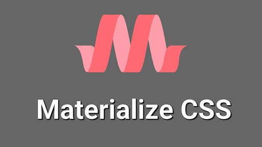

Materialize CSS
Что такое Materialize CSS?
Materialize CSS — это современный CSS-фреймворк, основанный на принципах Material Design, разработанных Google. Он предоставляет разработчикам набор инструментов для создания адаптивных и эстетически привлекательных веб-приложений с использованием простых и интуитивно понятных компонентов.
Основные характеристики Materialize CSS
- Material Design:
- Адаптивная сетка:
- Готовые компоненты:
- Кастомизация:
- Поддержка JavaScript:
Materialize CSS основан на принципах Material Design, что обеспечивает согласованность и привлекательность интерфейсов, а также интуитивно понятное взаимодействие с пользователем.
Фреймворк включает гибкую и адаптивную сеточную систему, которая позволяет легко создавать макеты, подходящие для различных устройств — от мобильных телефонов до настольных компьютеров.
Materialize CSS предоставляет широкий набор готовых компонентов, включая кнопки, карточки, модальные окна, формы и навигационные панели, что упрощает процесс разработки и повышает производительность.
Фреймворк предлагает возможность кастомизации с помощью Sass-переменных, что позволяет разработчикам настраивать стили под специфические требования их проектов.
Materialize CSS включает множество JavaScript-компонентов для создания динамичного взаимодействия, таких как карусели, выпадающие меню и уведомления.
Почему выбрать Materialize CSS?
Materialize CSS — это отличный выбор для разработчиков, которые хотят создать современные и стильные веб-приложения, основываясь на принципах Material Design. Его удобные компоненты и простота в использовании делают его идеальным инструментом для быстрого прототипирования и разработки.
Для более детального изучения возможностей Materialize CSS, вы можете ознакомиться с официальной документацией.